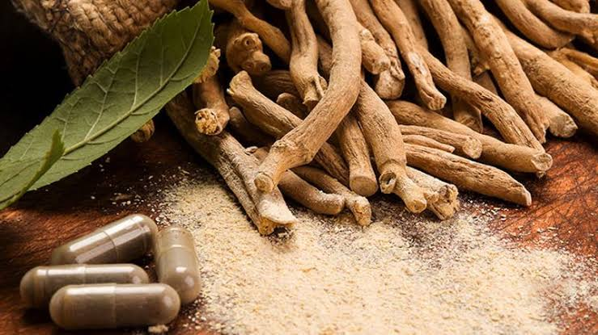

Ashwagandha
−
1
+
Ashwangandha powder - Rs.99
Support our locals who are working on the agricultural fields throughout day and night to protect our natural foods and herbs. Buy now.
Product Description
Testimonials
Ashwagandha (Withania somnifera, fam. Solanaceae) is commonly known as “Indian Winter cherry” or “Indian Ginseng”. It is one of the most important herb of Ayurveda (the traditional system of medicine in India) used for millennia as a Rasayana for its wide ranging health benefits. Ashwagandha is commonly available as a churna, a fine sieved powder that can be mixed with water, ghee (clarified butter) or honey. It enhances the function of the brain and nervous system and improves the memory. It improves the function of the reproductive system promoting a healthy sexual and reproductive balance. Being a powerful adaptogen, it enhances the body's resilience to stress. Ashwagandha improves the body's defence against disease by improving the cell-mediated immunity.
Ashwagandha Sleep Tonic
I took ashwagandha in combination with a few other herbs that support the nervous system during my last year of studies, where I was completing two courses simultaneously, deeply immersed in the student clinic, writing for the blog and in the throws of setting up a new business. To say that things were overwhelming is a bit of an understatement! Fortunately, I believe the herbs I was taking were incredibly supportive. I can speak directly to ashwagandha as I had also taken it as a simple (that is, taken it therapeutically as a single remedy, without blending it with other herbs) for part of that time. This is a great way to get to know a herb. I have to say my overall resilience improved, and despite it being an incredibly challenging year, I felt in control and able to cope. My sleep pattern improved and I was waking feeling refreshed, with enough energy to exercise regularly – even if it were only a power walk around the neighbourhood. It seems to be far less stimulating than the other adaptogens – it gives a very gentle, relaxed energy. I've since turned to ashwagandha on and off, typically in combinations with other adaptogens and nervines, for stress support during periods of intensity as needed.
Source: Click here